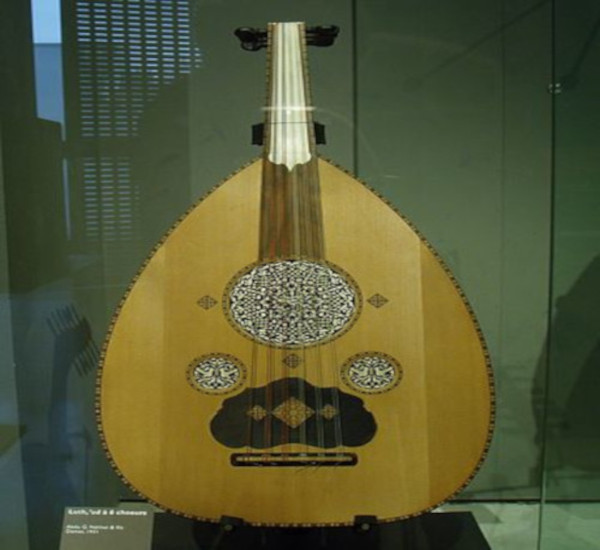

Violão: Sua História
A história do violão nos remete há quase 2.000 A.C. Os atuais violonistas aceitam atualmente duas teorias:
O violão derivou-se da “Cítara romana”, tendo seu uso expandindo com a dominação do império romano.


Alaúde
É chamado de cordofone de braço curto.
Bastante popular no período do Renascimento.
Saiba Mais